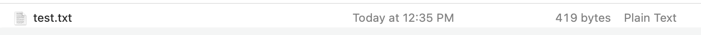
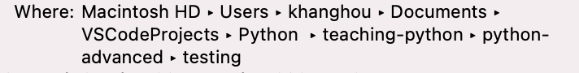
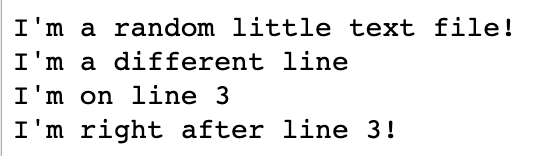

Basic Text Editor and Command line
Notepad++, Sublime Text 3 and Visual Studio Code
Declare variable by assigning a value to label.
Note: variables are case-sensitive and you cannot start variable name with a number
my_name = "Khang Hou"
MY_NAME = "Khang Hou" # Different variable than above
1clap2clap = "Clap" # Python will throw an error
# string
x = "a" + "random string" # Output: "arandom string"
print(x[3]) # guess this value
#int
y = 5
#float
pie = 3.15
#boolean
covid = False
#checking datatype
type(covid)
#list
mylist = ["apple", "banana", "cherry"]
#dictionary
x = {"name" : "John", "age" : 36}
strings - denoted by double or single quotes (" " or ' ')
numbers - denoted by numbers
booleans - denoted by either a True or False
lists - denoted by square brackets with zero or more elements inside
dictionaries - denoted by curly braces, with string and value pairs
+ is add
- is minus
* is multiply
/ is divide
Adding numbers
1 + 1 # Output: 2
169 + 420 # Output: ?
Concatenating strings
"rain" + "bow" # Output: rainbow
"You are " + str(3) + " years old today" # Python only accepts concatenation between strings.
Subtracting numbers
10 - 5 # Output: 5
0 - 10 # Output: -10
Multiplying numbers
5 * 5 # Output: 25
Multiplying numbers by a power
5 ** 2 # Equivalent to 5^2
Dividing numbers
4 / 2 # Output: 2.0
7 / 2 # Output: 3.5
2 / 3 # Output: 0.6666666666666666
x = 100
y = "Happy"
age = 10
z = 557
print(900 + x)
print("I am " + y)
print("I am " + y + " and I am " + str(age) + " years old today")
print(900 * z)
print(1000 / 557)
Supports the use of logical conditional statements
if: The first condition to be checked
elif: If the previous condition were not true, try this condition
else: Anything that were not caught by the preceding conditions
if today == "Saturday": print("No School") elif today == "Sunday" or tomorrow == "Public Holiday": print("No School") else: print("Going To School")today = "Saturday"
Output: "No School"
today = "Home-Based Learning"
tomorrow = "Public Holiday"Output: "No School"
today = "Monday"
tomorrow = "Weekday"Output: "Going to School"
Array can hold many values under a single variable. Lists are ordered and allow duplicate values
# declaring List
thislist = ["apple", "banana", "cherry", "apple", "cherry"]
print(thislist[0]) Output: "apple"
Question: What is the output of print(thislist[1])?
print(len(thislist)) Output: 5
Question: What is the output of print(thislist[-4])?
print(thislist[-1]) Output: "cherry"
Question: What is the output of print(thislist[-4])?
print(thislist[2:4]) Output: ["cherry", "apple"]
Note: This is called index slicing and it gets the value at index 2 to 3 but it always excludes the last number
Question (Tricky): What is the output of print(thislist[2:2])?
print(thislist[:-1]) Output: ["apple", "banana", "cherry", "apple"]
Note: [:-1] is equivalent to [0:-1], meaning to take every element in the list except for the last one. print(thislist[:]) would print out everything
Question (Hard): What is the output of print(thislist[-2:])?
thislist.append("mango") thislist.insert(1, "orange") thislist.remove("cherry") thislist.pop(1) print(thislist)
After Insertion: ['apple', 'orange', 'banana', 'cherry', 'apple', 'cherry', 'mango']
After Deletion: ['apple', 'banana', 'apple', 'cherry', 'mango']
Note: Removed "banana" first, then the first instance of "cherry"
To iterate over a sequence that is either a list, dictionary or string
for i in range(3):
print(i) # Prints 0, 1 and 2
for i in range(2,6):
print(i) # Prints numbers 2 to 5
cars = ["Ford", "Volvo", "BMW"]
for car in cars:
print(car)
# value from 1 to 11 but not including 11
# increment by 2 each time
for i in range(1,11,2):
print(i)
# 1,3,5,7,9
for i in range(5, 0, -1):
print(i) # Prints numbers 5 to 1
# Question 1
for i in range(5):
print(i + 1)
# Question 2
for i in range(4):
print(i - 1)
# Question 3
for i in range(1, 5):
print(i)
# Question 4 (Hard)
for i in range(10, 0, -2):
print(i)
Dictionary are used to store data in key-value pairs
A collection which is ordered, changeable and does not allow duplicates
# declaring a dictionary
thisAppleProduct = {
"brand": "Apple",
"type": "Macbook",
"year": 2013,
"year": 2015,
"color": ["grey", "pink","light grey"]
}
print(thisAppleProduct["year"]) # returns 2015
print(thisAppleProduct.keys()) # returns all the keys
print(thisAppleProduct.values()) # returns all the value
#changing specific values
thisAppleProduct["type"] = "IPhone"
print(thisAppleProduct["type"]) #return IPhone
thisAppleProduct = {
"brand": "Apple",
"type": "Macbook",
"year": 2015
"color": ["grey", "pink","light grey"]
}
thisAppleProduct = {
"brand": "Apple",
"type": "MacbookPro",
"year": 2015
"color": ["grey", "pink","light grey"]
}
thisAppleProduct = {
"brand": "Apple",
"type": "MacbookPro",
"color": ["grey", "pink","light grey"]
}
thisAppleProduct = {
"brand": "Apple",
"type": "MacbookPro",
"year": 2020,
"color": ["grey", "pink","light grey"]
}
thisAppleProduct["type"] = "MacbookPro" # changing the value of the key "type"
del thisAppleProduct["year"] # deleting the key & value of dictionary
thisAppleProduct["year"] = 2020 # adding key & value to the dictionary
Before colon: key
After colon: value
dictionary_name["key"] to access the value
dictionary_name.keys() to list all keys
dictionary_name.values() to list all values
Blocks of code that run only when called
Passes data, known as arguments into the function
Can return the result from the function
def greet():
print("Hello world")
greet() # to invoke the function
x = "parameter"
y = "arguments"
def my_function(arg, param):
print(arg + " is the same as " + param)
print(param + " is the same as " + arg)
print(arg + " and " + param + " are both variables")
my_function(x, y)
my_function(y, x)
number1 = 2
number2 = 3
total = 0
def sum(num1, num2):
total = num1 + num2
sum(number1, number2)
print(total) # Is this 0 or 5?
mylist = ["chocolate", "apple", "soda"]
def shopping(grocerylist):
for item in grocerylist:
print("Bought: " + x)
shopping(mylist)
Class is an object constructor
"Blueprint" for creating object.
Classes can be understood as a Template
An object is a mass-produced copy based on a class blueprint
class Human:
eyes = 2
hair = "black"
#creating the object
Adam = Human()
# hair is a property
print(Adam.hair) # returns black
#changing the property value
Adam.hair = "blonde"
print(Adam.hair) # returns blonde
class Human:
#assign value for name and age accordingly
def __init__(self, name, age): # every class function always has 1 default parameter: self, which is the class itself. You can use it to reference the class's variables
self.name = name
self.age = age
person = Human("John",21)
print(person.name)
class Human:
#assign value for name and age accordingly
def __init__(self, name, age):
self.name = name
self.age = age
def greetings(self):
print("hello there")
person = Human()
person.greetings()
Python has some built-in modules, one of them being "random". This module can be used to generate random numbers
#importing the module into the file
import random
#return a number from 0 to 9, including the numbers 0 and 9
print(random.randint(0,9))
File I/O stands for File Input Output.
Used to read and write files. Program is able to read content from a file, parse it, then write its own file
A file name is the name of a file. Every file has an extension

The filename above would be test.txt, where .txt refers to the file extension
Every file has a directory it belongs in

The above directory would be
Windows: C:\\Users\\khanghou\\Documents\\VSCodeProjects\\Python\\teaching-python\\python-advanced\\testing
Mac: /Users/khanghou/Documents/VSCodeProjects/Python/teaching-python/python-advanced/testing
Notice how Windows uses 2 backslashes to separate each folder (\\) while Mac uses 1 forward slash (/) only.
For Windows, to use only 1 backslash, you can add an r at the start of the string like so: r"C:\Users\khanghou\..."
To open a file, you must first find the directory it is located in, then its name
Using the file object, call the read() function
with open("/Users/khanghou/Documents/VSCodeProjects/Python/teaching-python/python-advanced/testing/test.txt") as file:
lines = f.read()
print(lines)

The file directories were absolute. Relative file directories start from wherever your current working directory is, which is to say, which folder you are coding in right now
So if your current working directory was already in the testing folder of "/Users/khanghou/Documents/VSCodeProjects/Python/teaching-python/python-advanced/testing", you could just call the text file like so
with open("test.txt") as file:
lines = f.read()
print(lines)
. - the current folder you're in
.. - the parent folder of the folder you're in
os.getcwd() - returns the folder the program is currently in
os.chdir() - move cwd to the specified directory
os.getcwd()
/Users/khanghou/testing
os.getcwd()
/Users/khanghou
os.getcwd()
/Users/khanghou/another-folder
os.getcwd()
/Users/khanghou/void-folder
os.getcwd()
/Users/khanghou/void-folder/abyss/staring
os.getcwd()
/Users/khanghou/testing
os.getcwd()
/Users/randomuser
os.chdir("../")
os.chdir("another-folder")
os.chdir("../void-folder")
os.chdir("abyss/staring")
os.chdir("../../../testing")
os.chdir("/Users/randomuser")
You add another parameter to the open function, "w". This opens up the file in write mode
with open("writing-test.txt", "w") as file:
file.write("Hello friend!!!")
"a": This opens up the file in append mode, so you don't overwrite anything
with open("writing-test.txt", "a") as file:
file.write("Newly appended information!!")